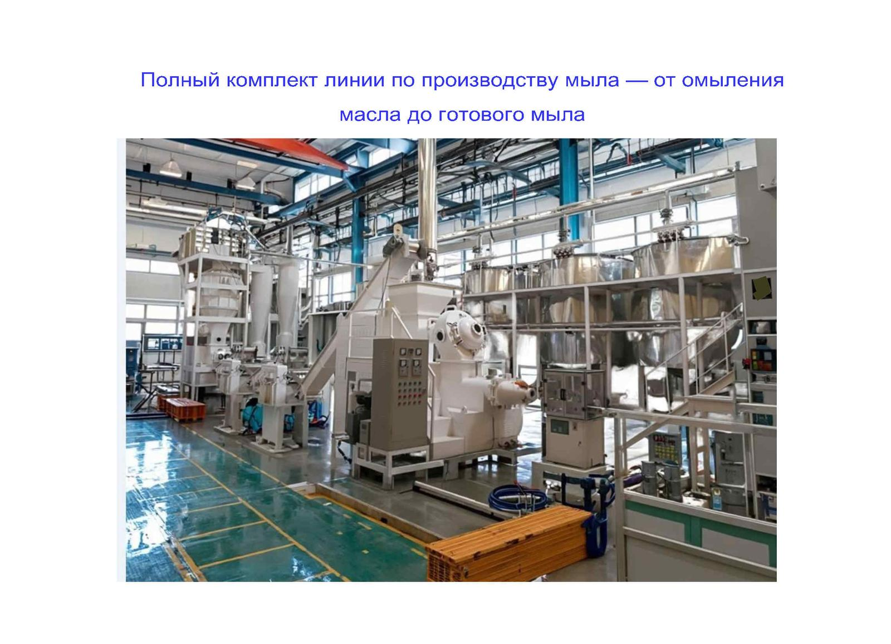
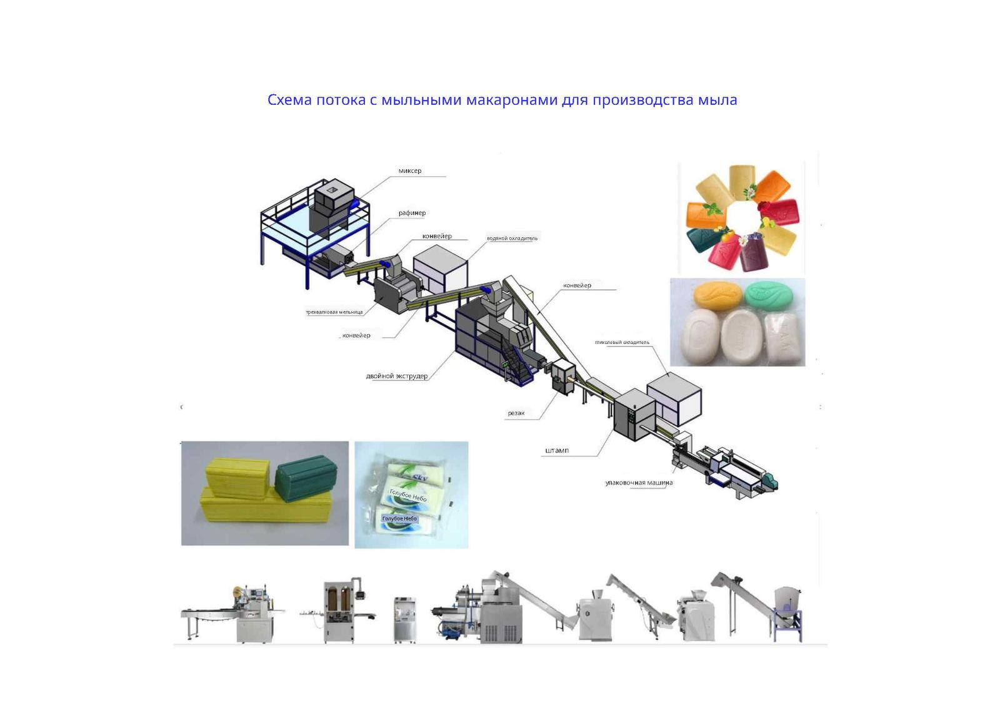
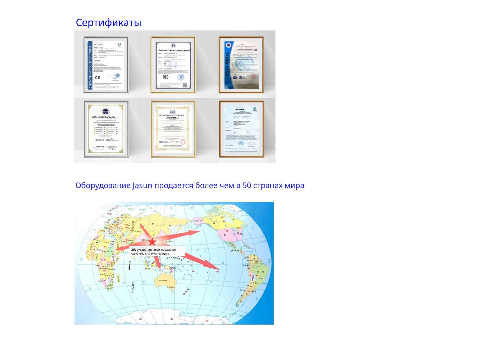

Надежный производитель промышленного оборудования для производства мыла
Основанная в 2005 году, компания Kaifeng Jasun Industry Co., Ltd. специализируется на professionalьном оборудовании для производства мыла и комплексных производственных линиях. Обладая более чем двадцатилетним опытом работы в отрасли, мы стремимся предоставлять производителям мыла по всему миру высокопроизводительное оборудование — от процесса омыления до финальной упаковки готового мыла. Наши машины экспортируются в более чем 50 стран и регионов, включая такие развитые страны, как США.
Процесс производства мыла из растительных масел/животных жиров и каустической соды
Весь процесс разделен на два основных этапа.
Первый этап (Часть А) — это система омыления и сушки для получения мыльных нитей. Это реакция омыления растительных масел/животных жиров и каустической соды для образования мыльной основы. Затем эта мыльная основа обрабатывается в вакуумной сушильной системе и грануляторе, который экструдирует ее в мыльные нити.
Второй этап (Часть В) — это производство готового мыла из мыльных нитей. Мыльные нити помещаются в мыломешалку, которая смешивает их с ароматизатором и пигментом. Затем смесь подается в рафинировочную мельницу (рафинер). Ее основная задача — тщательно перемешать, гомогенизировать и измельчить мыльные материалы. После этого мыльные нити поступают в трехвалковую мельницу (трехвалковый измельчитель), где они измельчаются в тонкие мыльные листы. Эти тонкие листы по конвейерной ленте подаются в двухшнековый вакуумный пресс для мыла или одношнековый пресс для мыла (экструдер для мыла), где они снова измельчаются и непрерывно экструдируются в длинный брусок мыла желаемой формы. Затем длинный брусок разрезается и формируется в отдельные бруски мыла необходимого размера с помощью автоматического станка для резки мыла (резак для мыла) или штамповочного станка для мыла (штамповочный станок/принтер для мыла/пресс для мыла/машина для перфорации мыла). Наконец, готовые бруски мыла упаковываются в упаковочную машину (машина для упаковки мыла в картонные коробки/машина для упаковки мыла в бумагу).
Полный комплект линии по производству мыла — от омыления масла до готового мыла

Схема производства мыла из мыльных хлопьев
- Миксер – равномерно смешивает мыльные хлопья с отдушками, пигментами, эфирными маслами и добавками.
- Рафинер – предварительное рафинирование смешанной мыльной массы.
- Трехвалковая мельница – измельчение мыла для гладкости и равномерных цвета и аромата.
- Двойной экструдер (вакуумный) – экструзия рафинированного мыла в непрерывный плотный брусок.
- Резак – нарезка длинного бруска на равномерные заготовки.
- Штамп – штамповка заготовок в готовые куски с логотипами и формами.
- Упаковочная машина – упаковка готового мыла для продажи.

Часть А:
Система омыления и вакуумной сушки — Оборудование для производства мыльных хлопьев
| 1 |  | Система омыления и вакуумной сушки (малая / средняя)Компактная интегрированная система сапонификации и вакуумной сушки из различных масел и каустической соды для производства мыльных хлопьев. Вместимость: |
| 2 |  | Система омыления и вакуумной сушки (большая)Большая система омыления и вакуумной сушки из различных масел и каустической соды для производства мыльных хлопьев. Вместимость: |
Часть B:
Оборудование для смешивания, измельчения, экструзии, формовки и упаковки мыла — Линия по производству мыла
- смеситель
- трёхвалковая мельница
- экструдер для мыла
- резак для мыла
- штамп для мыла
- машина для упаковки мыла
Оборудование для смешивания, рафинирования и измельчения
| 3 |  | Промышленный миксер для мылаОсновные функции и принцип работы: Это оборудование является критически важным элементом в начальной стадии производственной линии мыла. Оно в основном используется для высокоэффективного и равномерного смешивания мыльных хлопьев с различными добавками, такими как ароматизаторы, пигменты, эфирные масла и другие вспомогательные ингредиенты. Миксер оснащен внутренними винтовыми лопастями. В процессе работы мотор приводит в движение главный вал, используя механическое движение винта для непрерывного подъема, переворачивания и рассыпания мыльных хлопьев снизу. Эта мощная сила сдвига и конвективное действие позволяют жидким ароматизаторам и твердым пигментам быстро проникать и равномерно покрывать мыльные хлопья за короткое время. Таким образом, он создает гладкую, утонченную и однородно окрашенную основу для последующих измельчения и формовки (экструзии). Структурные особенности: |
| 4 |  | Рафинирующий plodderПриложения: Ключевые особенности: |
| 5 |  | Трехвалковая мельницаКристаллическая трансформация и модификация: После смешивания внутренняя кристаллизация мыла может быть неравномерной. Трехвалковая мельница использует высокое давление для принудительной трансформации кристаллов мыла, формируя кристаллическую структуру с лучшей пластичностью и упругостью. Это обеспечивает меньшую склонность конечного мыла к трещинам и предотвращает его размягчение при замачивании в воде. |
Вакуумный экструдер и штамповка
| 6 |  | Двухступенчатый вакуумный экструдер для мыла (или вакуумный экструдер для мыла)Высокоэффективная вакуумная дегазация: Мыльный материал проходит полное извлечение воздуха и пузырьков в герметичной вакуумной камере. Это делает внутреннюю структуру мыла исключительно плотной и компактной, эффективно предотвращая внутренние полости или трещины, делая готовый мыльный брусок более прочным и менее подверженным размягчению при замачивании в воде. |
| 7 |  | Автоматическая машина для штамповки мыла / Штамповщик мыла XD120 МодельТрехмерное сжатие: Мыло, выходящее из предыдущего процесса (вакуумный экструдер), является просто непрерывной длинной полосой. Через закрытие и зажим прецизионных верхних и нижних (или левых и правых) форм это оборудование штампует заготовки мыла под высоким давлением в готовые туалетные мыльные бруски с идеальными контурами, закругленными углами или специфическими трехмерными формами. |
| 8 |  | Автоматическая машина для штамповки туалетного мыла типа XDA1000Приложения: Ключевые особенности: |
Штамповка, резка и охлаждение
| 9 |  | Автоматическая пневматическая машина для тиснения туалетного мыла XD100Применения: Вспомогательные требования: |
| 10 |  | Автоматические машины для тиснения и резки мылаТочная непрерывная резка: Основная задача этого оборудования заключается в том, чтобы точно и быстро резать непрерывный брусок мыла, экструдированного из вакуумного plodderа, на равномерные индивидуальные блоки мыла (заготовки) в соответствии с заданными target dimensions. |
| 11 |  | Охладитель низкой температурыТочное глубокое охлаждение форм: Это оборудование в основном циркулирует и подает низкотемпературную охлаждающую жидкость для обеспечения непрерывного и принудительного снижения температуры металлических форм внутри автоматической машины для штамповки мыла. |
| 12 |  | Охлаждающая вода машинаТрение и рассеивание тепла для предотвращения плавления мыла: Поскольку трехвалковая мельница разрывает мыло на высоких скоростях, а вакуумный plodder экструдирует мыло под тяжелыми условиями и высоким давлением, генерируется значительное количество физического трения и тепла. Это оборудование впрыскивает циркулирующую охлажденную воду в полые валы мельницы и бочки/жакеты plodderа, чтобы принудительно унести тепло, предотвращая размягчение, плавление и прилипание мыла к валам из-за перегрева. |
Вакуум, мини-линия и упаковка
| 13 |  | Вакуумный насосВысокоэффективное вакуумное извлечение в камере: Основная задача этого оборудования заключается в соединении с запечатанной камерой вакуумного экструдера, полностью и принудительно извлекая воздух и пузырьки, застрявшие между гранулами мыла внутри. |
| 14 |  | Мини интегрированное оборудование для производства мылаУниверсальная микролиния для производства мыла: это микролиния для производства мыла, разработанная специально для домашних мастерских, ремесленников, небольших студий или учебных лабораторий. Ключевые способности: |
| 15 |  | Машина для упаковки мыла, подушечный стильВысокоскоростная полностью автоматическая упаковка в подушечный стиль: Основная задача этого оборудования заключается в автоматической упаковке формованных твердых мыльных брусков в пластиковую композитную пленку, выполняя горизонтальную герметизацию и резку с обоих концов и продольную герметизацию сзади для формирования полностью запечатанной упаковки в подушечном стиле. |
Картонажная машина, бумажная упаковка и формы
| 16 |  | Упаковочная машина для мыла / Машина для упаковки в картонные коробки, стиль картонной коробкиПолностью автоматическое формирование и упаковка картонов: Основная задача этого оборудования заключается в автоматическом всасывании плоских, предварительно изготовленных картонных заготовок, их формировании в картонные коробки, точной загрузке мыльных брусков внутрь и автоматическом завершении складывания крышки коробки, за tick или горячим клеем. |
| 17 |  | Машина для упаковки мыла, мягкая бумагаАвтоматическая обертка и заправка из двухслойной мягкой бумаги: Основная задача этого оборудования заключается в том, чтобы нанести двухслойную обертку на формованные бруски мыла. Внутренний слой обычно представляет собой жесткий картонный усилитель/подкладку (используется для сохранения формы и структурной поддержки), в то время как внешний слой — это покрытая мягкая бумага или композитная бумага с изысканной графикой. Во время упаковки она автоматически выполняет завертывание концов и заправку углов, формируя классический, ретро-вид завернутого бруска. |
| 18 |  | Форма для мыла будет настроена в соответствии с требуемой формой, размером и логотипом покупателяПридание окончательной трехмерной геометрической формы: Формы состоят из двух основных соединяющихся половин (верхняя мужская форма и нижняя женская форма). Когда заготовка мыла помещается внутрь и подвергается высокому давлению механического или пневматического штамповки, тело мыла претерпевает пластическую деформацию внутри полостей формы, что приводит к образованию идеальных овальных, круглых, прямоугольных или различных индивидуальных неправильных геометрий. |
Сертификаты
Оборудование Jasun продается более чем в 50 странах мира.

Часто задаваемые вопросы – FAQ
Q1: Принимаете ли вы индивидуальные заказы?
Все наши машины могут быть изготовлены по индивидуальным требованиям клиента.
Q2: Как вы гарантируете нормальную работу машины?
Каждая машина тестируется на нашем заводе перед отгрузкой. Мы настроим машину на оптимальный режим работы перед поставкой, а запасные части всегда доступны и бесплатны для вас в течение гарантийного года.
Q3: Как установить машину после ее прибытия?
Мы направим инженеров за рубеж, чтобы помочь клиенту с установкой, пусконаладкой и обучением.
Q4: Что мне нужно сделать, чтобы выбрать лучшую машину для нас?
1) Сообщите нам материал, который вы хотите перерабатывать, – мы подберем подходящий тип машины для вашего рассмотрения. 2) Затем сообщите нам необходимую производительность. 3) Наконец, сообщите нам внутренний диаметр вашей емкости, чтобы помочь выбрать лучший диаметр заправочной головки.
Q5: Есть ли у вас руководство или видео по эксплуатации, чтобы мы могли лучше узнать машину?
Да, мы вышлем вам руководство и видео по эксплуатации после вашего запроса.
Q6: Если некоторые запасные части сломаются, как решить проблему?
Прежде всего, сделайте фото или видео, чтобы показать неисправные детали. После подтверждения проблемы нашим инженером мы бесплатно вышлем вам запасные части в течение гарантийного года, но стоимость доставки оплачиваете вы.
Свяжитесь с нами для получения коммерческого предложения и бесплатного каталога
Свяжитесь напрямую с нашей инженерной командой через WhatsApp или по электронной почте, чтобы узнать цены.
💬 Связаться через WhatsApp WhatsApp: +86-13937853263✉ Электронная почта: jasunmachinery@gmail.com